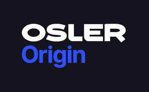
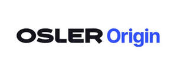
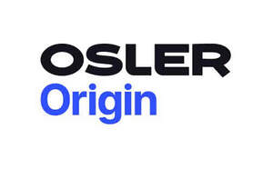
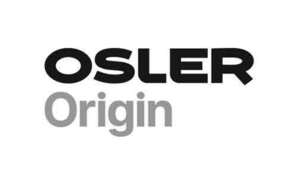
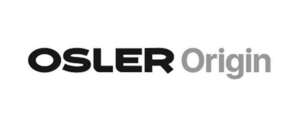

Trade Mark Journal No.2026/010 6 March 2026
UK00004344627 24 February 2026 (1,5,9,10,42,44)
Mark 1

Mark 2

Mark 3

Mark 4
Mark 5

Mark 6

- Class 1
- Assays and reagents for scientific or clinical research purposes; in vitro diagnostic reagents for scientific or clinical research purposes; chemical substances, chemical compositions and chemical preparations for diagnostic testing for scientific or clinical research purposes; diagnostic testing materials for scientific or clinical research purposes; diagnostic preparations, substances, agents, reagents and assays for scientific or clinical research purposes; diagnostic testing preparations, substances, agents, reagents and assays for scientific or clinical research purposes, namely, for the testing of blood, body fluids, blood derivatives and body fluid derivatives; diagnostic testing preparations, substances, agents, reagents, assays scientific or clinical research purposes, namely, for detecting pathogens and biomarkers in whole blood, blood plasma, blood serum, blood cell preparations, cerebrospinal fluid, saliva, mucus, sputum, phlegm, urine, and sweat; diagnostic reagents for in vitro use in haematology, biochemistry, clinical chemistry and microbiology, none being for medical or veterinary use; diagnostic kits comprising sets of reagents for in vitro testing of blood, body fluids, blood derivatives and body fluid derivatives for scientific or clinical research purposes; reagents for conducting electrochemical assays, none being for medical or veterinary use; reagents for conducting enzyme-linked immunosorbent assays, none being for medical or veterinary use.
- Class 5
- Assays and reagents for medical or veterinary purposes; in vitro diagnostic reagents for medical or veterinary purposes; chemical substances, chemical compositions and chemical preparations for diagnostic testing for medical or veterinary purposes; diagnostic testing materials for medical or veterinary purposes; diagnostic preparations, substances, agents, reagents and assays, for medical or veterinary purposes; diagnostic testing preparations, substances, agents, reagents and assays for medical or veterinary use, namely, for the testing of blood, body fluids, blood derivatives and body fluid derivatives; diagnostic testing preparations, substances, agents, reagents and assays for medical or veterinary use, namely, for detecting pathogens and biomarkers in whole blood, blood plasma, blood serum, blood cell preparations, cerebrospinal fluid, saliva, mucus, sputum, phlegm, urine, and sweat; diagnostic reagents for in vitro use in haematology, biochemistry, clinical chemistry and microbiology for medical or veterinary purposes; diagnostic kits comprising sets of reagents for in vitro testing of blood, body fluids, blood derivatives and body fluid derivatives for medical or veterinary purposes; reagents for conducting electrochemical assays for medical or veterinary purposes; reagents for conducting enzyme-linked immunosorbent assays for medical or veterinary purposes.
- Class 9
- Scientific and clinical research apparatus and instruments; diagnostic apparatus and instruments for scientific or clinical research purposes; diagnostic measuring apparatus for scientific or clinical research purposes; scientific and clinical research apparatus and instruments, namely analysers and cartridges for haematology, biochemistry, clinical chemistry and microbiology testing; laboratory apparatus and instruments, namely, analysers and cartridges for testing chemical, biological and environmental samples for scientific or clinical research purposes; laboratory apparatus and instruments for the analysis of blood, body fluids, blood derivatives and body fluid derivatives for scientific or clinical research purposes; laboratory apparatus and instruments, namely, analysers and cartridges for testing whole blood, blood plasma, blood serum, blood cell preparations, cerebrospinal fluid, saliva, mucus, sputum, phlegm, urine, and sweat for scientific or clinical research purposes; laboratory apparatus and instruments for collecting, storing, processing, testing, analysing and monitoring liquid samples and for reporting in relation to the same; scientific and clinical research apparatus and instruments, namely, devices for collecting, storing, processing, transferring, testing, analysing and monitoring liquid samples of blood, body fluids, blood derivatives and body fluid derivatives and for reporting in relation to the same; scientific and clinical research apparatus and instruments, namely, devices for collecting, storing, processing, transferring, testing, analysing and monitoring liquid samples of whole blood, blood plasma, blood serum, blood cell preparations, cerebrospinal fluid, saliva, mucus, sputum, phlegm, urine, and sweat, and for reporting in relation to the same; scientific and clinical research apparatus and instruments, namely, diagnostic devices for detecting pathogens and biomarkers in liquid samples, blood, body fluids, blood derivatives and body fluid derivatives and for reporting in relation to the same; diagnostic testing apparatus and instruments for the detection and measurement of clinical biomarkers for scientific or clinical research use; blood testing apparatus for scientific or clinical research purposes; apparatus for blood analysis for scientific or clinical research purposes; sample preparation devices for scientific or clinical research use; monitoring, measuring, signalling and control apparatus and instruments, namely, electronic measuring instruments for use in electrochemical analysis, potentiostats, galvanostats and impedance analysers; computer apparatus and instruments, namely, computer hardware and peripheral apparatus for clinical research or scientific purposes; software; application software (apps); software for use in the field of analytics and diagnostics; software for use in relation to analytical and diagnostic apparatus, instruments and devices; downloadable computer software for operating analytical and diagnostic devices; downloadable computer software for analysing data obtained from blood, body fluids, blood derivatives and body fluid derivatives; downloadable computer application software for management of patient data, healthcare workflow and connectivity between patients and healthcare providers; computer hardware and software for data capture, collection, recording, processing, transmission, reproduction, storage and/or communications; parts and fittings for all the aforementioned goods.
- Class 10
- Medical and veterinary apparatus and instruments; diagnostic apparatus and instruments for medical or veterinary purposes; diagnostic measuring apparatus for medical or veterinary purposes; medical and veterinary apparatus and instruments, namely analysers and cartridges for haematology, biochemistry, clinical chemistry and microbiology testing; medical and veterinary diagnostic instruments for the analysis of blood, body fluids, blood derivatives and body fluid derivatives; medical and veterinary diagnostic cartridges and kits for testing blood, body fluids, blood derivatives and body fluid derivatives; medical and veterinary apparatus and instruments for diagnostic use in analysing whole blood, blood plasma, blood serum, blood cell preparations, cerebrospinal fluid, saliva, mucus, sputum, phlegm, urine, and sweat and for reporting in relation to the same; medical and veterinary apparatus and instruments, namely, devices for collecting, storing, processing, transferring, testing, analysing and monitoring liquid samples of blood, body fluids, blood derivatives and body fluid derivatives, and for reporting in relation to the same; medical and veterinary apparatus and instruments, namely, devices for collecting, storing, processing, transferring, testing, analysing and monitoring liquid samples of whole blood, blood plasma, blood serum, blood cell preparations, cerebrospinal fluid, saliva, mucus, sputum, phlegm, urine, and sweat, and for reporting in relation to the same; medical and veterinary diagnostic apparatus and instruments, namely, diagnostic devices for detecting pathogens and biomarkers in blood, body fluids, blood derivatives and body fluid derivatives, and for reporting in relation to the same; medical and veterinary diagnostic apparatus and instruments, namely, analysers and cartridges for use in diagnosing and/or monitoring acute and chronic diseases, infectious diseases, hereditary diseases, dietary and metabolic deficiency disorders, and physiological disorders; diagnostic testing apparatus and instruments for the detection and measurement of clinical biomarkers for medical or veterinary use; blood testing apparatus for medical or veterinary purposes; apparatus for blood analysis for medical or veterinary purposes; sample preparation devices for medical or veterinary diagnostic use; electrochemical biosensors for the determination of concentrations of target analytes in body fluids, for medical or veterinary purposes; electronic measuring instruments for medical or veterinary use for the analysis of samples of blood, body fluids, blood derivatives and body fluid derivatives; medical apparatus and instruments, namely, wearable devices for monitoring patient vital signs, blood and sweat properties and physical movement; parts and fittings for all the aforementioned goods.
- Class 42
- Software as a service (SaaS); platform as a Service (PaaS); providing temporary use of non-downloadable computer software; software as a service (SaaS) and Platform as a Service (PaaS) in the field of analytics and diagnostics; providing temporary use of non-downloadable computer software for operating analytical and diagnostic devices; providing temporary use of non-downloadable computer software for use in relation to analytical and diagnostic apparatus, instruments and devices; providing temporary use of non-downloadable computer software for data capture, collection, recording, processing, transmission, reproduction, storage and/or communications; software as a Service (SaaS) for analysing data obtained from blood, body fluids, blood derivatives and body fluid derivatives; providing online non-downloadable computer software for the management of patient data, healthcare workflow and connectivity between patients and healthcare providers; consultancy, advisory and information services relating to or connected with all the aforementioned services.
- Class 44
- Medical services; medical diagnostic services; medical diagnostic testing, analysing, monitoring and reporting services; medical testing, screening and analysis services relating to the diagnosis and/or treatment of disease, namely acute and chronic diseases, infectious diseases, hereditary diseases, dietary disorders, metabolic deficiency disorders, and physiological disorders; consultancy, advisory and information services relating to or connected with all the aforementioned services.
Osler Diagnostics Limited
Representative: Kilburn & Strode LLP